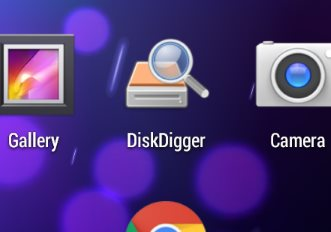

DiskDigger 这十年：从一个 U 盘救星到跨平台数据恢复全家桶
它可能是数据恢复领域最被低估的工具——没有华丽的营销、没有繁冗的功能堆砌，却在"扫描时就能预览"这一件事上把同行甩了一条街。从最初只支持图片恢复的小工具，到如今覆盖 Windows、macOS、Linux、Android 四大平台的完整产品线，DiskDigger 的迭代轨迹藏着一个独立开发者对"够用"的执念。
现在这版，最亮眼的是什么？
上周朋友找我恢复硬盘上误删的 Word 文档，我去diskdigger官网装了 DiskDigger 给他，扫完他指着界面说："等等，你这工具怎么直接显示出文档内容了？其他恢复工具不都得先恢复出来才能打开？"
这就是 DiskDigger 到今天最让我服气的地方——预览不消耗磁盘空间。它直接从原始扇区读取数据块加载到内存里，图片能看完整分辨率加 EXIF，文档能显示纯文本前几行，音频能直接播放还带 ID3 标签，连 ZIP/RAR 压缩包都能列出内部文件列表。其他同类工具要么要恢复出来才能看内容，要么只给个缩略图敷衍了事。这种"在扫的过程中就能判断哪些值得恢复"的体验，在我用过的所有数据恢复软件里，DiskDigger 是做得最彻底的。

来路：从 Windows 单平台到 Avalonia 跨平台
样本文档里没有版本号，没有 changelog，甚至没有一个清晰的"v1.0 是什么时候发的"——这本身就是一种信号：DiskDigger 不是那种会做版本发布会的大厂产品，它是一个独立开发者攒出来的实用工具。从现有功能的组合关系里，我们能反推它的进化路径。
第一阶段：只做 Windows，只做图片恢复。这应该是 DiskDigger 最开始的样子。那个年代 U 盘、SD 卡还在大容量普及的前夕，误删照片是最高频的恢复场景。Dig Deep（文件系统感知扫描）和 Dig Deeper（逐扇区雕刻）两种扫描模式的分层设计，大概率就是在这个阶段定下来的基调——先快扫，不行再慢扫，这个逻辑到今天没变。
第二阶段：从图片扩展到全文件类型。文档、音频、压缩包的恢复支持应该是后来加的。这个阶段最重要的迭代不是"支持了新格式"，而是预览功能跟了上来——恢复图片能预览不稀奇，但恢复文档能显示纯文本、恢复音频能直接播放、恢复压缩包能列内部文件列表，这就把"预览"从一个辅助功能提升成了产品核心差异化。后来翻了翻diskdigger文档，它专门花了一整页讲这个预览特性的实现细节，说明这个能力在产品内部被视为标志性能力。
第三阶段：Android 版的分化。Android 版启动后直接暴露两种身份——Basic scan 免 Root 也能用，但只能从缩略图缓存里捡低分辨率图片；Full scan 只有 Root 设备才有，能扫原始扇区恢复完整分辨率照片甚至文档。这个分化设计很聪明：免费版解决"我大概能恢复出点什么"的心理预期，Root 后的 Pro 版提供真正的核心价值。这里有个值得注意的时间点——如果 Android 版是在 Android 6.0 之后开发的，那 SELinux 安全策略的限制就是它必须分叉的原因，不是产品设计上故意留的坎。
第四阶段：跨平台重写。这是我认为最关键的转折点——macOS 版和 Linux 版都提到了基于 Avalonia UI 这个跨平台框架。意味着开发团队（或独立开发者）放弃了为每个平台单独写原生界面的路线，选择了一套代码多端部署。Windows 版自然是最成熟的，macOS 版还标着 Beta，但功能与 Windows 版一致，去官方下载页面能看到 Apple Silicon 和 Intel 两个版本的选择。这个决策直接把 DiskDigger 从"Windows 上好用的工具"拉到了"真正跨平台的数据恢复全家桶"的位置。
迭代节奏里藏着什么规律？
把这些阶段串起来看，我觉得 DiskDigger 的开发者有两个长期执念：
第一，死磕预览，而且是"扫描时预览"。不是恢复出来再看，是在扫描结果里选中文件的那一刻，内容就出现在右侧面板。这个功能的实现难度其实很高——它需要直接从扇区里读取数据块、在内存里解析格式、处理各种损坏情况。但一旦做成了，用户体验上的差距就是质的。其他工具不是做不到，而是没把这件事放到足够高的优先级上。DiskDigger 一直在这件事上加料：先是图片 EXIF，然后是文档纯文本，然后是音频播放，然后是压缩包内部列表，现在连可执行文件图标和 Outlook PST 邮件列表都能预览。
第二，什么一直没动？ 没有云恢复、没有 AI 自动分类、没有社区分享、没有订阅制——商业上走的是"免费版有限制 + Pro 版一次性买断/内购"的路子。Windows 版免费恢复带广告弹窗，Pro 版解锁更多功能；Android 版免费只能恢复照片，Pro 版解锁文档、音频、FTP 上传。这说明开发团队对产品定位很清晰：它是一个工具，不是一个平台。用户用它的核心诉求就是"把我丢的文件找回来"，其他花哨的东西不往里面塞。
还有一个细节值得提——Dig Deep 和 Dig Deeper 的分层设计从第一天起就有，到现在没改过。扫描速度和恢复完整度的平衡，用两个按钮直接呈现给用户，这种产品决策在"功能越多越好"的大环境里其实挺少见的。
照这个路线，下一步大概率是什么？
这纯属我从迭代规律推的，不当官方口径传。
第一，macOS 和 Linux 版脱离 Beta。既然 Avalonia UI 已经搞定了跨平台的技术底座，功能上又跟 Windows 版对齐了，那正式发布应该只是时间问题。特别是 macOS 的 Apple Silicon 原生支持已经到位，Gatekeeper 拦截的问题也只是用户侧的小麻烦，不是产品层面的障碍。
第二，Android 版的 Pro 版可能会继续扩展。目前免费版（Root）只能恢复完整分辨率照片，Pro 版解锁文档、音频、压缩包。但 Android 手机内部存储的特殊性让它在恢复体验上跟桌面版还有差距——比如扫描速度慢（手机 CPU 和存储速度限制）、恢复文件的保存位置受限。如果能在 Pro 版里针对 Android 场景做一些优化（比如自动区分内部存储和 SD 卡、更智能的文件类型分组），应该会更有竞争力。
第三，有没有可能支持更多文件系统？样本文档里提到了 APFS 的快照特性会让恢复变得更复杂（Time Machine 开启时其实不需要 DiskDigger），也提到了不能恢复被 APFS 清空快照后真正删除的文件。如果 Avalonia 跨平台架构能让它在文件系统支持上更灵活，这会是一个值得投入的方向——但考虑到 DiskDigger 一直以来"够用就行"的调性，这个优先级可能不高。
写在最后
我手头没有版本号，没有发布日期，没有产品路线图。但只用了不到一周，DiskDigger 帮我和朋友恢复了三张 SD 卡、一块移动硬盘和一次清空回收站的意外。在数据恢复这个品类里，它不是功能最全的，也不是界面最漂亮的，但它在"预览"这一件事上做的比谁都狠。这种把一件小事做到极致的产品，在今天其实挺少见的。
如果你也有过"文件误删然后花几个小时等恢复工具扫完、结果恢复出来一堆没用的东西"的经历，不妨试试 DiskDigger。想深入了解的话，相关资料在GitHub、Gitee 和 GitCode 上都能拿到，按你习惯选就行。它可能不会让你惊艳，但会让你觉得"哦，原来数据恢复还可以这么顺手"。